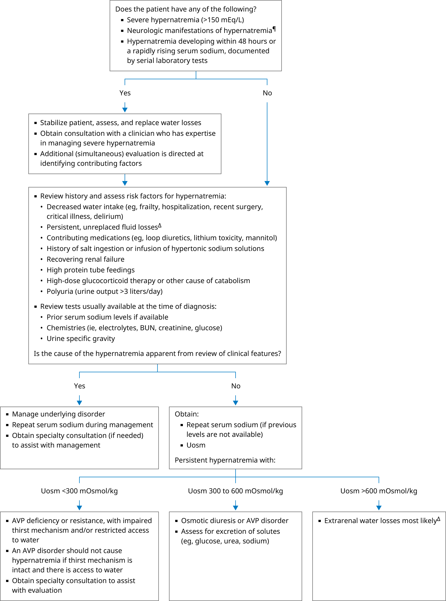

AVP: arginine vasopressin; BUN: blood urea nitrogen; Uosm: urine osmolality.
* The reference range for serum sodium is 135 to 145 mEq/L (mmol/L). Interpretation of a specific abnormal result should be based on the reference range reported for that result.
¶ Neurologic manifestations include lethargy, weakness, irritability, twitching, seizures, coma. Severe symptoms are likely at serum sodium concentrations >160 mEq/L.
Δ Common causes of inadequate replacement of fluid losses (typically in hospital setting or skilled nursing facility) include: